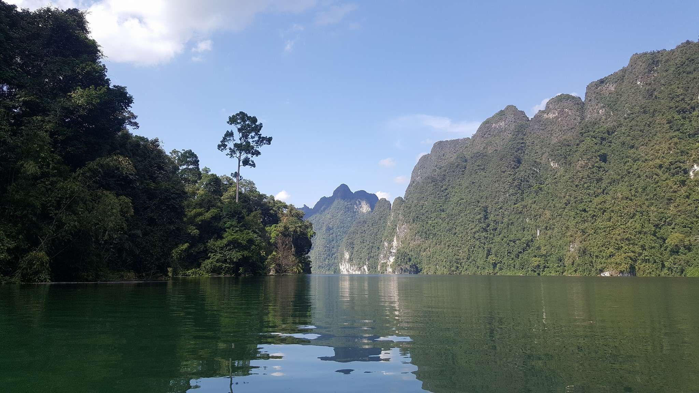

Introduction
การไปเที่ยวครั้งนี้ เป็นการไปเที่ยวครั้งแรกหลังจากที่บินกลับมาจากออสเตรเลีย ที่เลือกเที่ยวที่นี่เพราะคุณเคยไปและคุณชอบ เลยอยากให้เราได้ไปสัมผัสบ้าง ซึ่งมันก็ดีนะ ถึงแม้ว่าระหว่างทริปจะมีเรื่องราวให้คุณต้องหงุดหงิดบ้าง แต่พอดูรวมๆแล้วมันก็เป็นทริปที่มีเสน่ห์นะ อิอิ
เนื่องจากว่า เว็บนี้ไม่ได้ทำขึ้นมาเพื่อรีวิวสถานที่ท่องเที่ยว แต่ทำขึ้นมาเพื่อรีวิวความทรงจำของตัวเอง มันก็จะดูแปลกๆนิดนึงนะ :)
First Feeling
ก่อนที่จะไปเที่ยวที่นี่ ครั้งแรกเราก็รู้สึกแบบว่า ที่นี่มันที่ไหน ทำไมแฟนเราถึงชอบจังเล้ยยย เห็นบอกว่าสวยอย่างงั้นอย่างงี้ ยอมรับว่าแรกๆ ไม่ค่อย enjoy จะไปซักเท่าไหร่ แต่ก็นะ แฟนเราไปด้วย ไปไหนไปกัน!
สำหรับค่าใช้จ่ายในทริปนี้...ราวๆ 7000+บาท รวมทุกสิ่งทุกอย่างในการเดินทางไปเที่ยว 2คืน ซึ่งอยู่ในระดับที่สมเหตุสมผลแหละ ไม่งั้นมีหรือ ยศวดีจะยอมควักกระเป๋าตังจ่าย ส่วนสมาชิกในทริป ประกอบไปด้วย เราเอง แฟนเราเอง พี่พลอย พี่โฟร์ และพี่ษา ซึ่งต้องขอบคุณสำหรับภาพถ่ายงามๆจากพี่ษาจริงๆ ถ้าไม่ได้พี่ษาไปด้วยก็คงไม่มีภาพงามๆเหล่านี้เก็บกลับบ้านเป็นแน่แท้
During Trip
จำได้ว่าขึ้นเครื่องไปลงปุบ มีรถมารับถึงสนามบินด้วย ก็ลากกระเป๋ากันปายยย ตัวเราก็ยังคงเฉยๆอยู่ ดูสิ๊ ที่ที่เราจะไปมันจะเป็นแบบไหนกันน้าาาา...ปั๊บ! ถึงท่าเรือ นั่งเรือน๊านนานกว่าจะถึงแพสายชลมั้ง(ถ้าจำไม่ผิด) ไปถึงปุบ มีปัญหาละ ไม่มีห้องสำหรับแก๊งเรา เอาแหล่วววว ยศวดีก็ขึ้นดิ จังหวะนั้น เราก็ได้แต่คิดว่าคงมีการสื่อสารอะไรผิดพลาดล่ะมั้ง ซึ่งสุดท้าย เราก็ได้ห้องมานอนจนได้ พร้อมกับต้องจ่ายค่ามัดจำกุญแจ 500 บาท และยศวดีก็ยังบ่นอุบอิบๆหลังจากนั้นเป็นระยะ 555+
ความรู้สึก ณ ตอนที่อยู่ในแพ... มันก็ดีนะ คือถ้าตั้งใจมองดูบรรยากาศ ธรรมชาติ มันสวยจริงๆ โดยเฉพาะตอนระหว่างทางที่นั่งเรือมาที่แพ ทุกอย่างรอบๆคือสวยงามคือดีย์เพราะมันเป็นธรรมชาติ แต่แพที่เราไปพักกันมันไม่ใช่ธรรมชาติ ก็มีบ้างที่แอบรู้สึกไม่ค่อยโอเคกับภาพความสกปรก กลิ่น แต่ก็ยังอยู่ในระดับที่รับได้บวกกับธรรมชาติรอบๆช่วงเบี่ยงเบนความสนใจไปจากสิ่งที่ไม่ค่อยโอเคนี้ไปได้ดี
ยศวดีก็เป็นความสดใสอีกอย่างที่ทำให้ลืมความไม่โอเคไปได้พอสมควร ถ้าไม่ติดว่ามีอะไรบางอย่างมาทำให้ยศวดีเค้าไม่สดใสอะนะ

ภาพหล่อๆ แนวๆ(มั้ง) by พี่ษา
ซึ่งในทริปนี้มันก็มีเรื่องทำให้ที่รักของเราต้องของขึ้นจนได้ เหตุเกิดเมื่อวันที่ 2 ของทริปเมื่อเราต้องมานั่งรอ จนท.จากรีสอร์ทนานเป็น ชม. ทำให้ยศวดีต้องวีนแตก สงสารก็แต่คนขับรถที่โดนรีสอร์ทจ้างวานมาอีกทีต้องพลอยรับสะเก็ดระเบิดอารมณ์ของยศวดีไป งานนี้พวกเราก็เลยให้ค่าทำขวัญพี่คนขับเค้าไป เห็นทีพี่เค้าคงจะเข็ดแก๊งเราไปอีกนาน 555+
Conclusion
ท้ายที่สุดแล้ว ทริปนี้ก็จบลงไปได้ด้วยดี เราอยากจะบอกคุณว่าถึงแม้ระหว่างทริปมันจะมีเรื่องราวที่ทำให้หงุดหงิดใจหรืออารมณ์เสีย แต่เราสนใจแค่ตรงที่เราได้ไปเที่ยวด้วยกัน เราจะไม่ยอมให้ปัญหาอื่นๆมากลืนกินช่วงเวลาความสุขของเราสองคนหรอก ง่อวววว จำไว้ใช้สำหรับทริปถัดไปเนาะ สำหรับทริปนี้ต้องลาไปก่อน บ๊ายบายยยยย